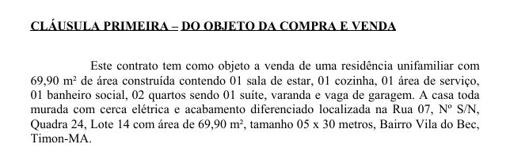
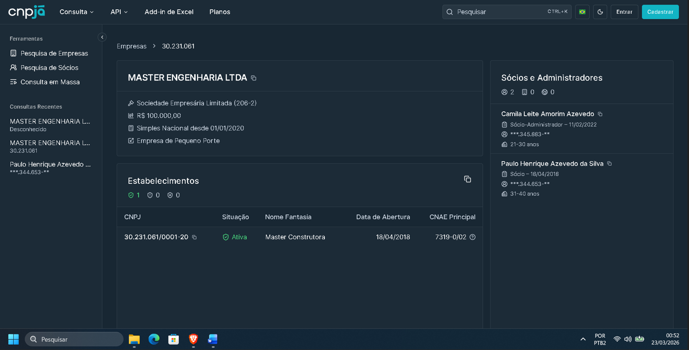
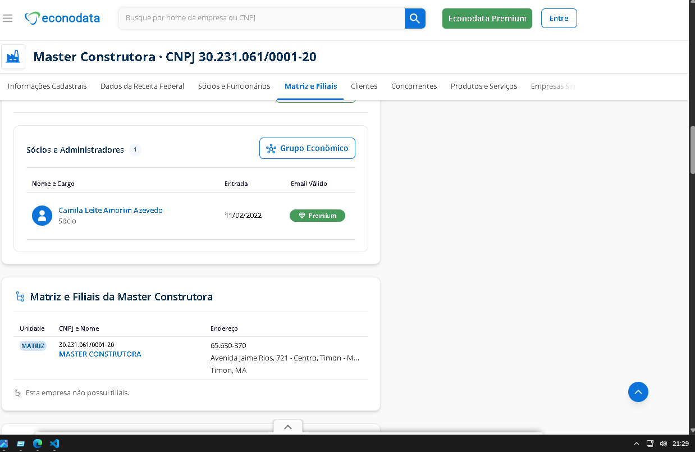
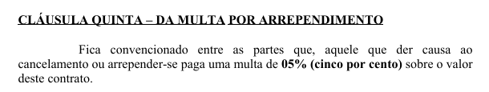
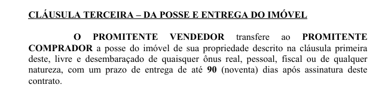
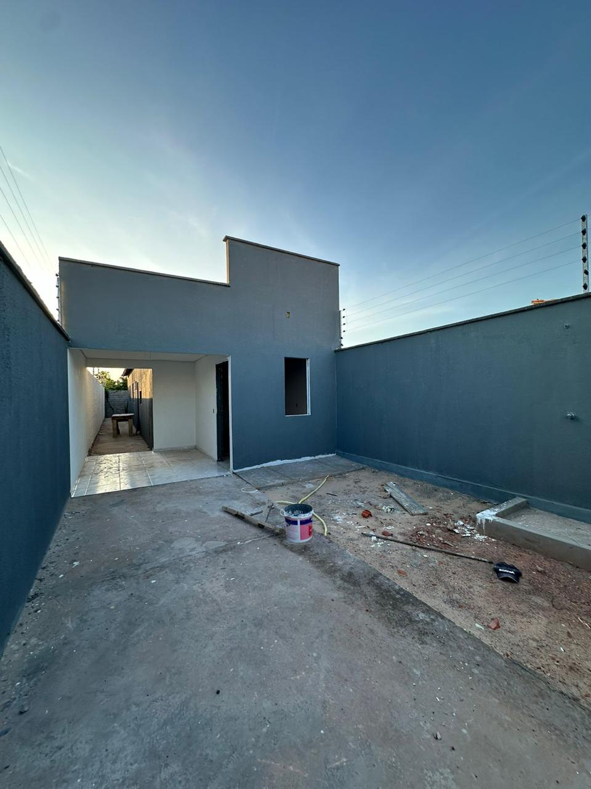
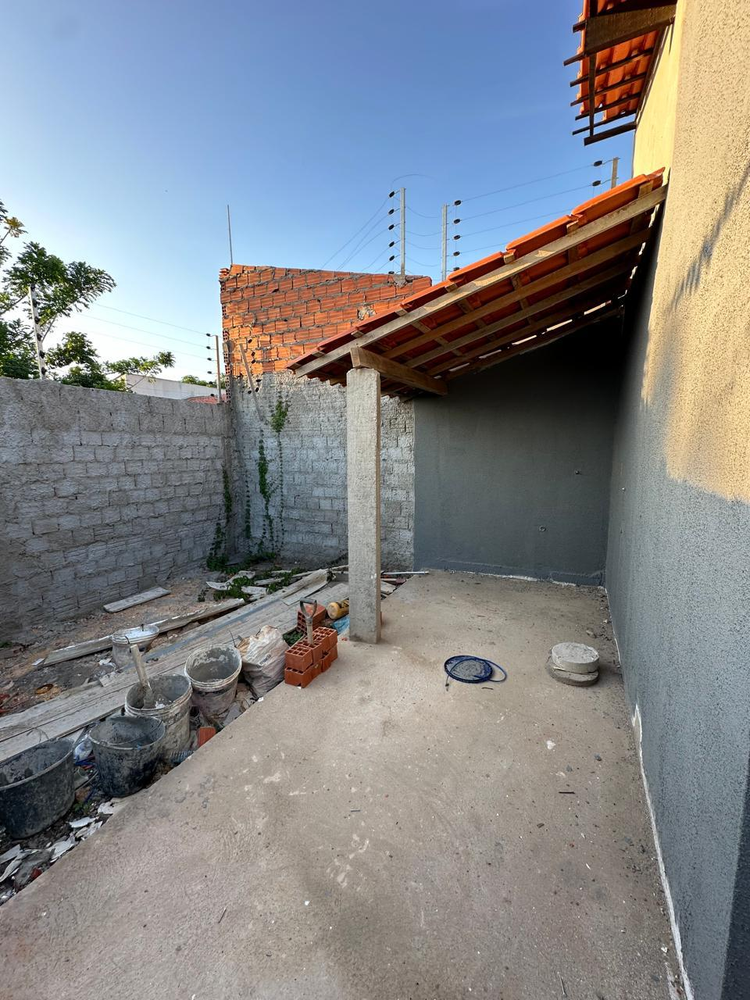
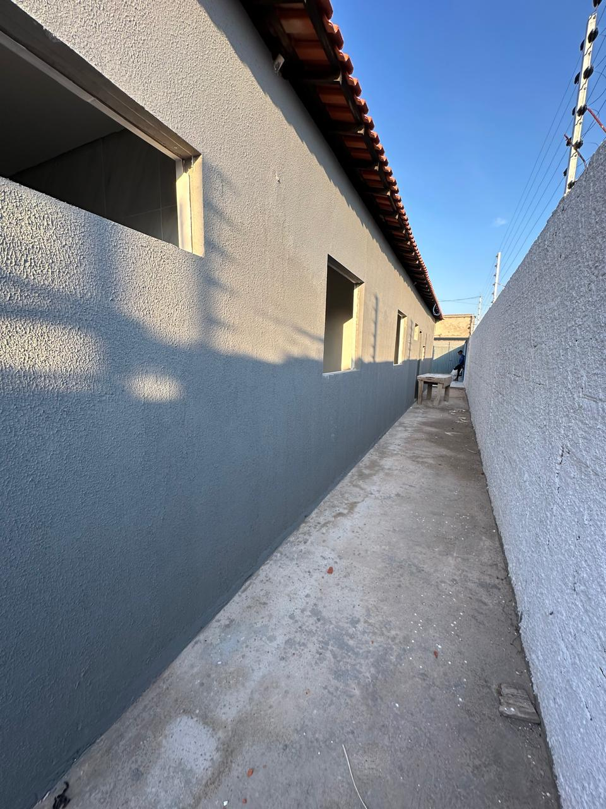

Obs.: Conforme verificado na consulta, o senhor PAULO HENRIQUE AZEVEDO DA SILVA retirou o nome do quadro societário da empresa Master Engenharia LTDA.
Ao realizar a visita ao imóvel e confirmar a compra, informei que tinha bastante pressa pois já estava me preparando para fazer uma cirurgia de hernioplastia inguinal e por estar com receio de ser demitido devido não ter um bom entendimento com a nova gerente e, sendo demitido, não conseguir fazer o financiamento. Ficou acertado que a casa seria entregue, no máximo no início de março de 2025. O corretor me informou que dava para entregar bem antes, pois o mais difícil já havia sido feito, que o restante era só acabamento.
Após a assinatura do contrato em 07 de fevereiro de 2025, após isso só tive informação do andamento do processo em 26 de fevereiro de 2025, pois eu entrei em contato com o corretor pelo Whatsapp. No áudio enviado pelo corretor Thiago Menezes, fui informado que devido à mudança de governo (Timon-MA) e por ser feriado estaria complicado até para solicitar um engenheiro.
Novamente cessaram as comunicações e em 14 de março de 2025, após eu entrar em contato com o corretor, fui informado do seguinte:
"Que o Prefeito de Timon estaria exigindo uma 'outorga', algo que não era obrigado a fazer"
Dúvida: Essa 'outorga' realmente não era obrigatória e foi tornada obrigatória pelo Governo de Timon-MA somente no início do ano de 2025?
Ainda em 14 de março de 2025 o corretor me encaminhou um áudio onde o vendedor Paulo informa que já havia dado entrada nesta documentação, que já havia instalado a cerca elétrica e que em 15 dias a casa estaria pronta.
Do dia 14 de março até o dia 03 de abril não entraram em contato comigo. Então, eu entrei em contato com o corretor, e o informado foi que ainda era a questão da "outorga".
Lembrando que, em caso de desistência, seria necessário pagar uma multa no valor de 5% do valor do contrato.

Segundo o contrato que eu tive que assinar para dar continuidade ao negócio, e confiando na palavra do corretor e do vendedor, lá informava o prazo de até 90 dias.

No dia 30 de abril o corretor me informa que saiu a documentação, agora só faltava colocar o mármore, limpar e chamar o engenheiro.
No dia 09 de maio fui demitido horas após informar ao R.H que eu me ausentaria no final do mês devido à necessidade de ser operado cirurgicamente. A liberação do médico para retorno às atividades laborais seria somente após 60 dias. Agora eu me encontrava operado e desempregado.
Em 09 de agosto o corretor entra em contato para perguntar qual era a previsão para eu voltar a trabalhar, pois ele, corretor, não sabia se o vendedor poderia esperar mais tempo e me propondo para desistir do imóvel e que no lugar dele poderia ser construída uma outra casa em um outro terreno próximo.
Obs.: Yago é meu cunhado. Foi ele quem me indicou o corretor e que me indicou para trabalhar na empresa onde trabalho hoje.
Obs. 1: Como aceitar cancelar um negócio de um imóvel que estava praticamente acabado e que não havia sido entregue por mais de 90 dias por um imóvel do zero, apenas o terreno?



Obs.: Repare que nas fotos já havia a cerca elétrica instalada nos 4 muros!
Fui admitido novamente em outro emprego, e agora o corretor está com bastante pressa para que eu envie o novo contracheque e assine os papéis no correspondente bancário.
Ao ser perguntado se a casa estaria pronta, a resposta dele foi: "Já tá terminada, já tá no ponto de limpar e te entregar."
Assinei o contrato, o corretor me acompanhou até o guichê de atendimento, o vendedor ficou em um guichê ao lado apenas observando. Mostrei ao corretor algumas coisas que estavam diferentes do combinado e ele me falou para não me preocupar, que o valor continuaria os R$ 170.000,00.
Em uma ligação dias antes de assinar o contrato, o vendedor garantiu que me entregaria a casa, mesmo antes de receber o pagamento da Caixa Econômica. O que não ocorreu.
Assinei o contrato no dia 19 de novembro de 2025, após isso somente dia 12 de dezembro que tive notícias, porque entrei em contato. No dia 16 de dezembro o corretor me informou que no dia seguinte me entregaria a casa.
No dia 28 de janeiro de 2025 o corretor me enviou um link do Instagram: "Segue lá depois para vc acompanhar"
Ver Reel no Instagram (thiagomenezesimoveis)
Na data e horário combinado para a entrega da minha casa:
Assinei o contrato pois falaram que o que fosse necessário fazer/corrigir eles fariam. Que não iriam sumir, afinal, eles estavam fazendo uma outra casa ao lado da minha.
Fora o que está visível, ainda existiam mais coisas que foram combinadas na hora de vender o imóvel a serem feitas:
Deixei a chave ao sair para o trabalho no outro dia para eles removerem os "entulhos", fazerem as correções e a limpeza. Apenas removeram o resto de material que deixaram e corrigiram algumas falhas no muro na frente da casa que eu tive que apontar, pois se eu não falasse iriam ficar daquele jeito mesmo.
Primeira noite: O Alberto deixou um buraco no teto e choveu!
Ao apontar os remendos de tinta na parede, disseram que era assim mesmo. Ao perguntar sobre as manchas escuras na parte inferior da parede, fui informado que era tinta fresca, o que na verdade já eram marcas de infiltração.
Um engenheiro, um corretor/construtor e um pedreiro/eletricista, todos profissionais em seus ramos trabalhando para enganar alguém desinformado.
Resumindo, tem uma área de fotos e vídeos com os defeitos do imóvel.
Após tentar bastante com o encarregado, de ter deixado por vários dias a chave em poder deles para não fazerem nada... Após ver a casa que ainda estava finalizando a parte estrutural quando recebi a minha ser acabada, entregue e, por incrível que pareça, com a cerca elétrica que era minha já instalada na propriedade dele e funcionando.
Agora além dos itens faltantes, mau acabamento, itens danificados, temos a chuva. Com ela vêm as infiltrações, a água que entra pela porta da frente e da cozinha, que escorre pelas janelas.
O Paulo é engenheiro formado e tem uma construtora desde 2018, mas quando conversamos, me disse que não sabia dos defeitos, que a casa havia sido comprada de outra pessoa, que não poderia me dar garantia de nada nela. Falou que: "Você sabe que pagou um preço barato nesta casa", sendo que quem deu o preço foi ele e o corretor. Eu comprei dele uma casa residencial, nova, nunca habitada!
Esta casa foi vendida por um engenheiro, avaliada por um engenheiro da Caixa Econômica Federal e aprovada. Porém a casa entra água quando chove!
O vendedor propôs, "já que ele não gostava de confusão", devolver o dinheiro que paguei de entrada e quitar minha dívida na Caixa em troca da casa. Isso quase após 01 ano de espera pela casa.
Com a ajuda dos funcionários da casa ao lado, o vendedor enviou os pedreiros dele para começar a correção das infiltrações.
Os consertos iniciaram dia 03 de março de 2026, porém, eles "consertavam" uma coisa e bagunçavam outra, ou então, apenas tentavam me convencer que do jeito que estava era o correto.
Foram quinze dias direto de atrasos, faltas ao trabalho, sujeira e ainda faltava bastante coisa. Por vários dias me atrasei para o trabalho para entregar a chave e depois de entrar em contato ficar sabendo que fulano teve um problema, que cicrano não poderia ir hoje, ou então "deixa a chave ou deixa o portão aberto, pois vai um pedreiro ver uma infiltração na casa ao lado. Hoje não vão fazer nada aí, mas o pintor vai passar mais uma mão de sela trinco na parede do vizinho..."
Tem a casa do vizinho feita e vendida pela mesma pessoa que vendeu a minha casa. Pode-se inferir a má-fé por parte do vendedor para comigo simplesmente observando a casa construída ao lado. E mesmo assim, aconteceram coisas do tipo abaixo.
No dia 18 de março de 2026 após ser informado que em mais um dia não iria ninguém para fazer as correções, ou seja, das reclamações que começaram no dia 18 de dezembro de 2025 ou eu teria que aceitar, porque era assim mesmo que tinha que ser ou eu deveria esperar e torcer para nenhum dos funcionários dele ter algum imprevisto ou compromisso. Enquanto isso, devido eu já saber como funciona uma construção, eu ainda não havia feito a minha mudança, estava dormindo em uma rede ou no chão, lavando roupa na mão, usando algumas coisas velhas para não estragar os meus poucos móveis. Informei que procuraria ajuda e que viessem recolher o material deles (o que não fizeram).
Muito tempo após, encontrei o vendedor em uma das lojas da empresa onde trabalho. Ele me chamou e disse: "Pode chamar um pedreiro para fazer as correções que eu pago."
Como acreditar em alguma promessa dessa pessoa?
Não é só pedreiro, ele, mais uma vez está tentando minimizar a situação e deixar mais um cliente no prejuízo.